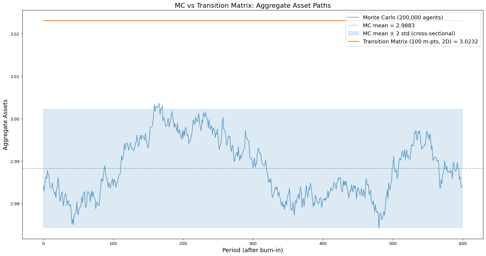
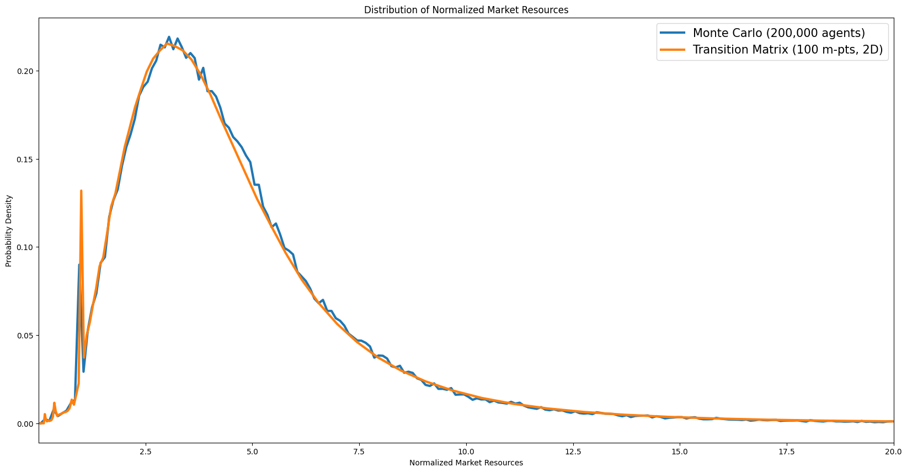
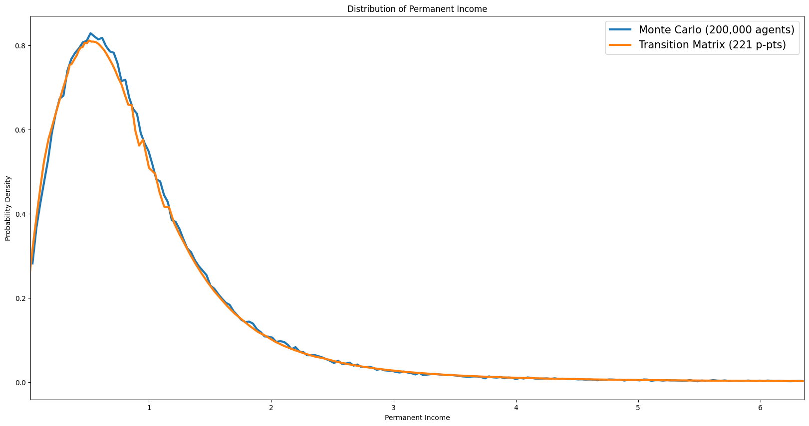
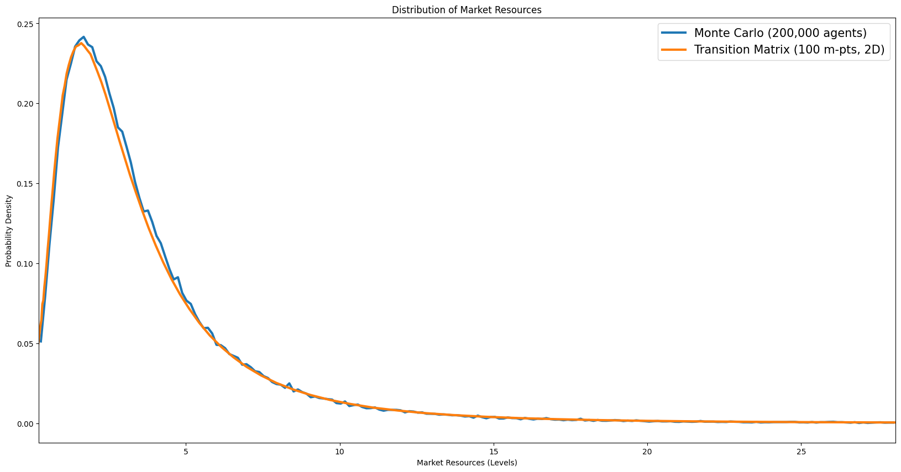
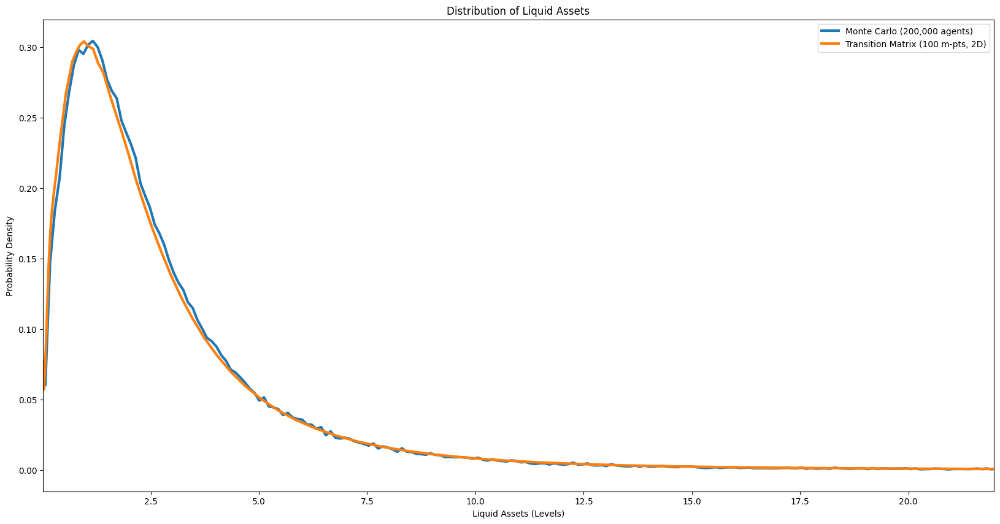
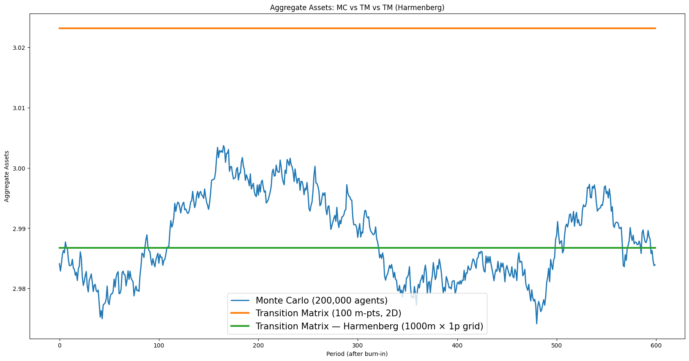
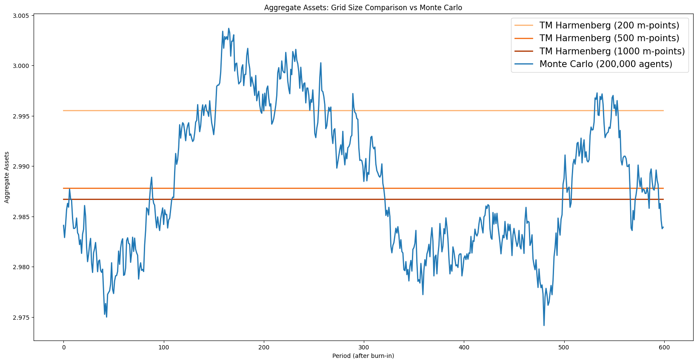
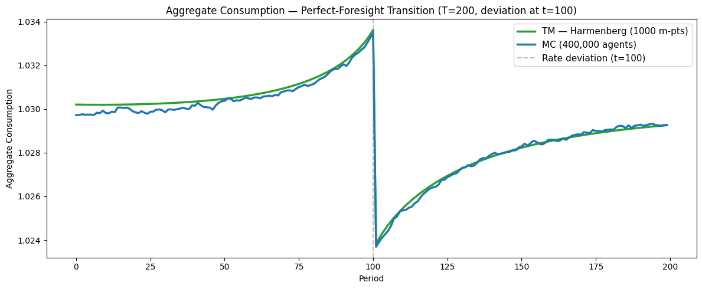
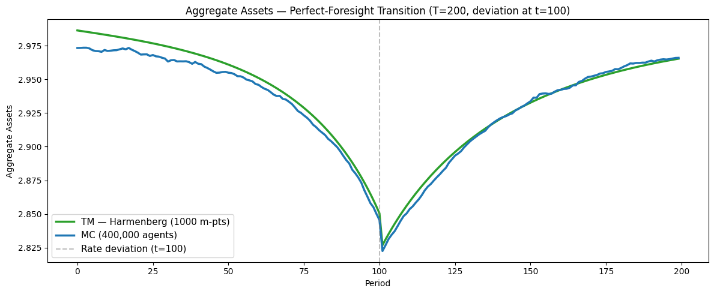
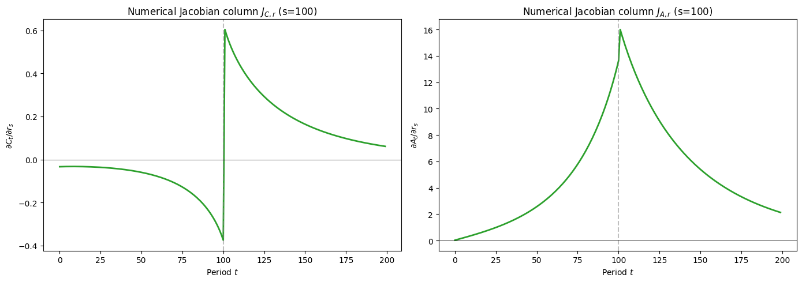

Interactive online version:
Transition Matrix vs Monte Carlo Methods for Heterogeneous-Agent Models#
By William Du (wdu9@jhu.edu), with subsequent revisions by Chris Carroll (ccarroll@llorracc.org)
Heterogeneous-agent models require computing the distribution of agents across individual states (wealth, income, etc.) and tracking how that distribution evolves over time. Two broad approaches exist:
Monte Carlo (MC) simulation tracks a finite panel of agents who each draw idiosyncratic shocks. Aggregates are sample means. The method is unbiased but noisy: sampling error scales as \(1/\sqrt{N}\).
Transition matrix (TM) methods discretise the state space onto a grid and represent the law of motion as a Markov transition matrix. The distribution is propagated forward by matrix–vector multiplication, giving deterministic (noise-free) aggregates at the cost of discretisation error.
This notebook compares the two approaches in a standard incomplete-markets consumption–savings model (Bewley, 1986; Aiyagari, 1994), implemented in HARK’s NewKeynesianConsumerType. The notebook proceeds in three parts:
Steady state: Solve the infinite-horizon problem, compute the ergodic distribution by both MC and TM, and compare accuracy and precision.
Harmenberg neutral measure: Show how the reweighting trick of Harmenberg (2021) collapses the 2D \((m, p)\) grid to a 1D \(m\) grid, dramatically improving TM efficiency.
Perfect-foresight transition path: Compute the economy’s nonlinear response to an anticipated interest-rate deviation — the building block for sequence-space Jacobians (Auclert, Bardóczy, Rognlie, and Straub, 2021) — and compare TM and MC performance.
The three key HARK methods used throughout are:
define_distribution_grid()— constructs the discretised state-space gridcalc_transition_matrix()— builds the Markov transition matrix from the solved policy functionscalc_ergodic_dist()— finds the stationary distribution (left eigenvector associated with eigenvalue 1)
Set up Computational Environment#
[5]:
import gc
import time
from copy import deepcopy
import matplotlib.pyplot as plt
import numpy as np
from scipy import sparse as sp
from HARK.ConsumptionSaving.ConsNewKeynesianModel import (
NewKeynesianConsumerType,
init_newkeynesian,
)
from HARK.distributions import Lognormal as LognormalDist
from HARK.utilities import jump_to_grid_2D
COLOR_MC = "tab:blue"
COLOR_TM = "tab:orange"
COLOR_HARM = "tab:green"
plt.rcParams.update(
{
"figure.figsize": (14, 6),
"axes.labelsize": 13,
"axes.titlesize": 15,
"legend.fontsize": 13,
"lines.linewidth": 2.5,
}
)
BURNIN = 500
N_MC_BINS = 200
N_P_DISC = 50
MAX_P_FAC = 10.0
timings = {}
def correct_newborn_dist(agent, param_dict, n_p_disc=N_P_DISC):
"""Patch the TM newborn distribution to match MC's lognormal pLvl init.
HARK hardcodes newborns at pLvl=1.0. This subtracts the default
newborn column and adds a lognormal-distributed replacement so that
TM and MC solve the same economic model.
"""
p_init = LognormalDist(
mu=param_dict["pLogInitMean"], sigma=param_dict["pLogInitStd"]
)
p_init_d = p_init.discretize(n_p_disc)
p_vals_init = p_init_d.atoms.flatten()
p_prbs_init = p_init_d.pmv.flatten()
shk_prbs = agent.IncShkDstn[0].pmv
old_NBD = jump_to_grid_2D(
np.ones_like(shk_prbs),
np.ones_like(shk_prbs),
shk_prbs,
agent.dist_mGrid,
agent.dist_pGrid,
)
new_NBD = jump_to_grid_2D(
np.ones(n_p_disc),
p_vals_init,
p_prbs_init,
agent.dist_mGrid,
agent.dist_pGrid,
)
live_prob = agent.LivPrb[0]
correction = (1.0 - live_prob) * (new_NBD - old_NBD)
agent.tran_matrix += correction[:, np.newaxis]
def create_finite_horizon_agent(
ss_agent, param_dict, T_cycle, shock_t, dx, orig_IncShkDstn
):
"""Create a finite-horizon agent for perfect-foresight transition paths.
Returns a solved agent with time-varying Rfree that includes a one-period
interest-rate deviation of size dx at period shock_t.
"""
params = deepcopy(param_dict)
params["T_cycle"] = T_cycle
params["LivPrb"] = T_cycle * [ss_agent.LivPrb[0]]
params["PermGroFac"] = T_cycle * [1.0]
params["PermShkStd"] = T_cycle * [ss_agent.PermShkStd[0]]
params["TranShkStd"] = T_cycle * [ss_agent.TranShkStd[0]]
params["tax_rate"] = T_cycle * [ss_agent.tax_rate[0]]
params["labor"] = T_cycle * [ss_agent.labor[0]]
params["wage"] = T_cycle * [ss_agent.wage[0]]
params["Rfree"] = T_cycle * [ss_agent.Rfree]
params["DiscFac"] = T_cycle * [ss_agent.DiscFac]
agent = NewKeynesianConsumerType(**params)
agent.cycles = 1
agent.del_from_time_inv("Rfree")
agent.add_to_time_vary("Rfree")
agent.del_from_time_inv("DiscFac")
agent.add_to_time_vary("DiscFac")
# Use the ORIGINAL income distribution — not the neutral-measure version
agent.IncShkDstn = T_cycle * [orig_IncShkDstn]
# Set the FULL terminal solution (not just cFunc_terminal_, which the
# solver ignores — it reads solution_terminal instead)
agent.solution_terminal = deepcopy(ss_agent.solution[0])
R = ss_agent.Rfree[0]
agent.Rfree = shock_t * [R] + [R + dx] + (T_cycle - shock_t - 1) * [R]
return agent
def jump_to_grid_fast(m_vals, probs, dist_mGrid):
"""Distribute probability mass onto a grid, preserving means.
Like HARK's jump_to_grid_1D but with a simpler interface. Each value
in m_vals has its probability split between the two nearest grid points
using linear interpolation weights.
"""
probGrid = np.zeros(len(dist_mGrid))
mIndex = np.digitize(m_vals, dist_mGrid) - 1
mIndex[m_vals <= dist_mGrid[0]] = -1
mIndex[m_vals >= dist_mGrid[-1]] = len(dist_mGrid) - 1
for i in range(len(m_vals)):
if mIndex[i] == -1:
mlowerIndex = 0
mupperIndex = 0
mlowerWeight = 1.0
mupperWeight = 0.0
elif mIndex[i] == len(dist_mGrid) - 1:
mlowerIndex = -1
mupperIndex = -1
mlowerWeight = 1.0
mupperWeight = 0.0
else:
mlowerIndex = mIndex[i]
mupperIndex = mIndex[i] + 1
mlowerWeight = (dist_mGrid[mupperIndex] - m_vals[i]) / (
dist_mGrid[mupperIndex] - dist_mGrid[mlowerIndex]
)
mupperWeight = 1.0 - mlowerWeight
probGrid[mlowerIndex] += probs[i] * mlowerWeight
probGrid[mupperIndex] += probs[i] * mupperWeight
return probGrid.flatten()
Calibration#
We use the quarterly infinite-horizon calibration from Carroll, Slacalek, Tokuoka, and White (2017) (“cstwMPC”), which targets the U.S. wealth distribution and aggregate capital-output ratio.
The cstwMPC paper estimates a distribution of discount factors \(\beta \sim U(\bar\beta - \nabla, \bar\beta + \nabla)\) across agent types (the “\(\beta\)-Dist” model) to jointly match the aggregate \(K/Y\) ratio and the Lorenz curve of the wealth distribution. Because this notebook uses a single agent type, we adopt the “\(\beta\)-Point” estimate: a single homogeneous \(\beta = 0.9867\) chosen to match \(K/Y\). (The \(\beta\)-Point model matches aggregate wealth but produces a more compressed wealth distribution than the \(\beta\)-Dist specification.)
Symbol |
Parameter |
Value |
Source / Rationale |
|---|---|---|---|
\(\rho\) |
CRRA |
1.01 |
Near-log utility (1.01 for numerical stability) |
\(R\) |
Gross interest factor |
\(1.01 / D \approx 1.016\) |
Mortality-adjusted quarterly rate (1.01 gross / survival prob) |
\(\beta\) |
Discount factor |
0.9867 |
\(\beta\)-Point estimate from cstwMPC |
\(D\) |
Survival probability |
\(1 - 1/160 = 0.99375\) |
Blanchard–Yaari, 40-year expected life |
\(\Gamma\) |
Permanent income growth |
1.00 |
Normalised (infinite horizon) |
\(\sigma_\psi\) |
Permanent shock std |
\((0.01 \times 4/11)^{1/2} \approx 0.060\) |
Sabelhaus & Song (2010) estimates, converted to quarterly |
\(\sigma_\theta\) |
Transitory shock std |
\((0.01 \times 4)^{1/2} = 0.200\) |
Sabelhaus & Song (2010) estimates, converted to quarterly |
\(\wp\) |
Unemployment probability |
0.07 |
Quarterly job-separation rate |
\(\mu\) |
Unemployment benefit |
0.15 |
15 % of permanent income |
The income process discretisation uses 7 points for each shock (permanent and transitory), giving a \(7 \times 7 = 49\)-point joint distribution per period plus the unemployment state.
The replication code for the cstwMPC paper is in the DistributionOfWealthMPC repository; the authoritative parameter values are in `code/calibration.py <econ-ark/DistributionOfWealthMPC>`__.
[6]:
# Start from HARK's NewKeynesian defaults (infinite horizon, cycles=0)
# and override with cstwMPC quarterly calibration (Carroll et al. 2017).
LivPrb_quarterly = 1.0 - 1.0 / 160.0 # Blanchard–Yaari, ≈ 40-year expected life
Dict = {
**init_newkeynesian,
# --- Preferences (cstwMPC β-Point) ---
"CRRA": 1.01, # near-log utility
"Rfree": [1.01 / LivPrb_quarterly], # mortality-adjusted quarterly rate
"DiscFac": 0.9867, # β-Point estimate
"LivPrb": [LivPrb_quarterly],
# --- Income process (Sabelhaus & Song 2010, via cstwMPC) ---
"PermShkStd": [(0.01 * 4 / 11) ** 0.5], # ≈ 0.0603
"TranShkStd": [(0.01 * 4) ** 0.5], # = 0.2
"UnempPrb": 0.07,
"IncUnemp": 0.15,
"UnempPrbRet": 0.0005,
# --- Simulation ---
"AgentCount": 200000,
"T_sim": 1100,
"pLogInitStd": 0.4, # initial pLvl dispersion (cstwMPC life-cycle, SCF young households)
"pLogInitMean": -0.5 * 0.4**2, # Jensen correction so E[pLvl] = 1.0
"pLvlInitCount": 25, # discretization of newborn pLvl (default 15 is adequate but 25 is smoother)
"kLogInitMean": np.log(0.000001), # newborns start with ~zero assets
"kLogInitStd": 0.0,
# --- Solution grid (EGM) ---
"aXtraMin": 0.0001,
"aXtraMax": 150,
"aXtraCount": 130,
"aXtraNestFac": 2, # double-exponential, matching TM grid (mFac)
# --- Transition matrix grid ---
# mMax=150, matching the SSJ one-asset HANK example (Auclert et al. 2021,
# https://github.com/shade-econ/sequence-jacobian/blob/master/notebooks/hank.ipynb).
"mMin": 1e-4,
"mMax": 150,
"mCount": 100,
"mFac": 2, # timestonest=2 → double-exponential grid, matching SSJ asset_grid
}
Solve the Infinite-Horizon Problem#
We create a NewKeynesianConsumerType with the calibration above and solve for the consumption function \(c(m)\) by iterating the Bellman equation to convergence. The resulting policy function is the foundation for everything that follows: the transition matrices are constructed from it, and it serves as the terminal condition for the finite-horizon backward induction used to compute transition paths.
The agent’s one-period problem is
where \(m\) is market resources (cash-on-hand) normalized by permanent income, \(c\) is consumption, \(a = m - c\) is end-of-period assets, \(u(c) = c^{1-\rho}/(1-\rho)\) is CRRA utility, \(\beta\) is the discount factor, \(\wp\) is the survival probability (LivPrb), \(R\) is the gross interest rate, \(\Gamma\) is the permanent income growth factor, and \(\psi\), \(\xi\) are the permanent and transitory income shocks drawn from the distributions
specified in the calibration. HARK solves this problem using the endogenous grid method (EGM) of Carroll (2006).
Note on the class name. Despite the name, NewKeynesianConsumerType is used here solely because it provides HARK’s transition-matrix infrastructure (define_distribution_grid, calc_transition_matrix, calc_ergodic_dist). The model solved in this notebook is a standard incomplete-markets consumption–savings problem with no New Keynesian features (no price rigidities, no Phillips curve, no monetary policy rule).
[7]:
example1 = NewKeynesianConsumerType(**Dict)
example1.solve()
Part 1: Steady-State Comparison — Transition Matrix vs Monte Carlo#
Before computing transition dynamics, we need to verify that the two methods agree on the steady state. Any discrepancy here signals a problem with the TM grid (too coarse, too narrow, or poorly placed) that would corrupt all subsequent dynamic calculations. We compute the ergodic distribution by both MC (long simulation with burn-in) and TM (eigenvector of the transition matrix), then compare aggregate consumption and aggregate assets.
Method 1: Monte Carlo simulation#
We simulate 200,000 agents for 1,100 periods and discard the first 500 as burn-in. Each agent independently draws permanent and transitory income shocks each period and follows the optimal consumption rule \(c(m)\). Post-burn-in sample means of consumption and assets give the MC estimate of steady-state aggregates.
[8]:
# Simulate (pLogInitStd=0.4 in Dict gives newborns lognormal pLvl dispersion,
# eliminating the lattice artifact from discrete permanent shocks)
example1.track_vars = ["aLvl"] # Track level of assets
example1.initialize_sim()
example1.simulate() # Simulate with Monte Carlo
# Compute Aggregate Consumption and Aggregate Assets
Monte_Carlo_Consumption = np.mean(
(example1.state_now["mNrm"] - example1.state_now["aNrm"])
* example1.state_now["pLvl"],
) # Aggregate Consumption
Monte_Carlo_Assets = np.mean(
example1.state_now["aNrm"] * example1.state_now["pLvl"],
) # Aggregate Assets
Method 2: Transition matrices (without Harmenberg)#
The TM approach discretises the joint \((m, p)\) state space onto a 2D grid. Given the policy function \(c(m)\), the end-of-period asset rule \(a(m) = m - c(m)\) maps each grid point to a next-period position; the income-shock distribution then determines which grid points are reached. This yields a column-stochastic Markov matrix \(\mathbf{T}\) whose left eigenvector (for eigenvalue 1) is the ergodic distribution.
Without the Harmenberg neutral measure, the grid must cover both the normalised market resources \(m\) and permanent income \(p\) dimensions, making the matrix large and the computation slow. We demonstrate this first to motivate the Harmenberg improvement below.
Grid construction. The market-resources grid is built by HARK’s make_grid_exp_mult function, which places points on a nonlinearly spaced grid that concentrates density near the borrowing constraint — where the consumption function has the most curvature. With timestonest=2 (set via mFac in the calibration), the construction applies \(\ln(1+x)\) twice to the grid bounds, creates a uniform grid in the transformed space, then inverts with \(\exp(x)-1\) twice. The resulting
grid is \(a_i = e^{e^{u_i} - 1} - 1\) (a double-exponential grid), which is equivalent to the asset_grid function in the Auclert, Bardóczy, Rognlie, and Straub (2021) SSJ toolkit (source). This grid type puts roughly 30% of its points below \(m = 1\), heavily over-representing the region near the constraint where the policy
function curves most sharply and where most of the ergodic mass resides. The upper bound mMax = 150 matches the SSJ one-asset HANK example (`hank.ipynb <shade-econ/sequence-jacobian>`__).
The number of grid points for \(m\) varies in the literature. Young (2010) uses 150–500 asset grid points for non-stochastic simulation; Winberry (2018) uses 50–100 per dimension; and the SSJ toolkit’s HANK example uses 500. We use 100 \(m\)-points for the 2D (non-Harmenberg) computation below and 1,000 for the 1D Harmenberg computation, reflecting the much smaller matrix size in the latter case.
[9]:
t0 = time.time()
# max_p_fac=10 keeps p-grid within ~exp(7.6) ≈ 2000, covering 99.99%+ of mass.
# The default (30) extends p to ~exp(23) ≈ 7.7e9, creating asset-in-levels weights
# up to 7.6e13 that amplify machine-epsilon noise into visible aggregate drift
# when iterating the transition matrix forward.
example1.define_distribution_grid(num_pointsP=110, max_p_fac=MAX_P_FAC)
t1 = time.time()
p_grid_2d = example1.dist_pGrid
example1.calc_transition_matrix()
correct_newborn_dist(example1, Dict)
t2 = time.time()
c_2d = example1.cPol_Grid
asset_2d = example1.aPol_Grid
example1.calc_ergodic_dist()
t3 = time.time()
vecDstn = example1.vec_erg_dstn
n_m_grid = len(example1.dist_mGrid)
n_p_grid = len(p_grid_2d)
n_agents = example1.AgentCount
grid_size = n_m_grid * n_p_grid
print(f"Grid: {n_m_grid} m-points × {n_p_grid} p-points = {grid_size} states")
print(f" define_distribution_grid : {t1 - t0:6.2f}s")
print(f" calc_transition_matrix : {t2 - t1:6.2f}s")
print(f" calc_ergodic_dist : {t3 - t2:6.2f}s")
print(f" Total : {t3 - t0:6.2f}s")
Grid: 100 m-points × 221 p-points = 22100 states
define_distribution_grid : 0.00s
calc_transition_matrix : 3.95s
calc_ergodic_dist : 9.38s
Total : 13.33s
[10]:
# Compute Aggregate Consumption and Aggregate Assets (in levels = normalized × pLvl)
gridc = np.outer(c_2d, p_grid_2d)
grida = np.outer(asset_2d, p_grid_2d)
AggC = np.dot(gridc.flatten(), vecDstn)
AggA = np.dot(grida.flatten(), vecDstn)
Comparing steady-state aggregates#
The table below compares aggregate consumption and assets from the two methods. The TM values are deterministic (no sampling error), so any difference from the MC mean reflects discretisation bias in the TM grid. The MC values fluctuate from run to run; the reported figures are post-burn-in time-series means.
[11]:
print("TranMatrix Assets = " + str(AggA))
print("Simulated Assets = " + str(Monte_Carlo_Assets))
print("TranMatrix Consumption = " + str(AggC))
print("Simulated Consumption = " + str(Monte_Carlo_Consumption))
TranMatrix Assets = [3.02317438]
Simulated Assets = 2.983934193698284
TranMatrix Consumption = [1.03017046]
Simulated Consumption = 1.0289881756626327
Simulated path of aggregate assets#
The plot below shows the time series of aggregate assets from both methods. The MC path fluctuates around its mean due to sampling noise; the TM path is a flat line (the ergodic distribution is a fixed point of \(\mathbf{T}\), so applying the matrix repeatedly leaves it unchanged). Visual inspection reveals whether the TM level falls within the MC fluctuation band — a necessary condition for the TM grid to be adequate.
[12]:
aLvls = np.array([np.mean(example1.history["aLvl"][i]) for i in range(example1.T_sim)])
aLvls_post_burnin = aLvls[BURNIN:]
MC_mean = np.mean(aLvls_post_burnin)
MC_std = np.std(aLvls_post_burnin, ddof=1)
MC_se = MC_std / np.sqrt(n_agents)
print(
f"MC aggregate assets: mean = {MC_mean:.6f}, std = {MC_std:.6f}, SE = {MC_se:.6f}"
)
aLvl_tran_mat = []
dstn_fwd = vecDstn
for i in range(example1.T_sim - BURNIN):
aLvl_tran_mat.append(np.dot(grida.flatten(), dstn_fwd))
dstn_fwd = np.dot(example1.tran_matrix, dstn_fwd)
MC aggregate assets: mean = 2.988310, std = 0.006986, SE = 0.000016
[13]:
# [mc_vs_tm_asset_paths] Time series of aggregate assets — MC vs TM
plt.figure(figsize=(20, 10))
plt.plot(
aLvls_post_burnin,
label=f"Monte Carlo ({n_agents:,} agents)",
color=COLOR_MC,
alpha=0.7,
)
plt.axhline(
MC_mean, color=COLOR_MC, linestyle="--", alpha=0.5, label=f"MC mean = {MC_mean:.4f}"
)
plt.fill_between(
range(len(aLvls_post_burnin)),
MC_mean - 2 * MC_std,
MC_mean + 2 * MC_std,
alpha=0.15,
color=COLOR_MC,
label="MC mean ± 2 std (cross-sectional)",
)
plt.plot(
aLvl_tran_mat,
label=f"Transition Matrix ({n_m_grid} m-pts, 2D) = {np.asarray(aLvl_tran_mat[0]).item():.4f}",
color=COLOR_TM,
linewidth=2.0,
)
plt.ylabel("Aggregate Assets")
plt.xlabel("Period (after burn-in)")
plt.legend()
plt.title("MC vs Transition Matrix: Aggregate Asset Paths")
plt.tight_layout()
plt.show()

Precision vs Accuracy#
The two methods exhibit a bias–variance tradeoff:
Monte Carlo is accurate (unbiased) but imprecise: the aggregate asset path fluctuates because each period draws \(N\) independent shocks. The shaded band in the plot above shows the range of typical MC fluctuations (mean ± 2 standard deviations). Increasing \(N\) (agent count) shrinks the band proportionally to \(1/\sqrt{N}\).
Transition matrix is precise (deterministic — a flat horizontal line) but may be less accurate: the aggregate level differs from the MC mean because of grid discretization error. With a coarser grid, this bias can be substantial. Increasing the number of grid points reduces the bias.
In statistical terms:
For MC, \(\text{Bias} = 0\) and \(\text{Variance} = \sigma^2/N\). For TM, \(\text{Variance} = 0\) and \(\text{Bias} = O(\Delta g)\), where \(\Delta g\) is the grid spacing.
[14]:
# Quantitative MSE decomposition
# Use the MC time-series mean as a proxy for the true aggregate.
MC_var = np.var(aLvls_post_burnin, ddof=1).item()
TM_bias = np.asarray(aLvl_tran_mat[0]).item() - MC_mean
print("MSE decomposition (aggregate assets):")
print(
f" MC — Bias² = 0 (by construction), Variance = {MC_var:.2e}, MSE = {MC_var:.2e}"
)
print(
f" TM — Bias² = {TM_bias**2:.2e} (bias = {TM_bias:.6f}), Variance = 0, MSE = {TM_bias**2:.2e}"
)
print()
if MC_var < TM_bias**2:
print(f" → MC has lower MSE here ({MC_var:.2e} < {TM_bias**2:.2e}).")
print(
" Increasing TM grid points would reduce TM bias (see Harmenberg section below)."
)
else:
print(f" → TM has lower MSE here ({TM_bias**2:.2e} < {MC_var:.2e}).")
print(" Increasing MC agent count would reduce MC variance.")
MSE decomposition (aggregate assets):
MC — Bias² = 0 (by construction), Variance = 4.88e-05, MSE = 4.88e-05
TM — Bias² = 1.22e-03 (bias = 0.034865), Variance = 0, MSE = 1.22e-03
→ MC has lower MSE here (4.88e-05 < 1.22e-03).
Increasing TM grid points would reduce TM bias (see Harmenberg section below).
Cross-sectional distributions#
The following cells plot the steady-state cross-sectional distributions of normalised market resources, permanent income, wealth, and liquid assets. These distributions are a key output of the model and a standard diagnostic for assessing whether the calibration produces empirically plausible heterogeneity.
Distribution of normalised market resources#
[15]:
# [dist_normalized_market_resources] Marginal distribution of normalized market resources
mdstn = example1.erg_dstn.sum(axis=1)
m_grid = example1.dist_mGrid
m_mids = 0.5 * (m_grid[:-1] + m_grid[1:])
m_bin_edges = np.concatenate([[m_grid[0]], m_mids, [m_grid[-1]]])
tm_density_m = mdstn / np.diff(m_bin_edges)
mlo = np.percentile(example1.state_now["mNrm"], 0.5)
mhi = np.percentile(example1.state_now["mNrm"], 99.5)
mc_edges = np.linspace(mlo, mhi, N_MC_BINS + 1)
mc_counts, _ = np.histogram(example1.state_now["mNrm"], bins=mc_edges, density=True)
mc_centers = 0.5 * (mc_edges[:-1] + mc_edges[1:])
plt.figure(figsize=(14, 6))
plt.plot(
mc_centers, mc_counts, label=f"Monte Carlo ({n_agents:,} agents)", color=COLOR_MC
)
plt.plot(
m_grid,
tm_density_m,
label=f"Transition Matrix ({n_m_grid} m-pts, 2D)",
color=COLOR_TM,
)
plt.ylabel("Probability Density")
plt.xlabel("Normalized Market Resources")
plt.title("Distribution of Normalized Market Resources")
plt.legend()
plt.xlim([mlo, mhi])
plt.tight_layout()
plt.show()

Distribution of permanent income#
[16]:
# [dist_permanent_income] Permanent income distribution
pdstn = example1.erg_dstn.sum(axis=0)
p_grid = example1.dist_pGrid
p_mids = 0.5 * (p_grid[:-1] + p_grid[1:])
p_bin_edges = np.concatenate([[p_grid[0]], p_mids, [p_grid[-1]]])
tm_density_p = pdstn / np.diff(p_bin_edges)
plo = np.percentile(example1.state_now["pLvl"], 0.5)
phi = np.percentile(example1.state_now["pLvl"], 99.5)
mc_edges_p = np.linspace(plo, phi, N_MC_BINS + 1)
mc_counts_p, _ = np.histogram(example1.state_now["pLvl"], bins=mc_edges_p, density=True)
mc_centers_p = 0.5 * (mc_edges_p[:-1] + mc_edges_p[1:])
plt.figure(figsize=(14, 6))
plt.plot(
mc_centers_p,
mc_counts_p,
label=f"Monte Carlo ({n_agents:,} agents)",
color=COLOR_MC,
)
plt.plot(
p_grid,
tm_density_p,
label=f"Transition Matrix ({len(p_grid)} p-pts)",
color=COLOR_TM,
)
plt.ylabel("Probability Density")
plt.xlabel("Permanent Income")
plt.title("Distribution of Permanent Income")
plt.legend()
plt.xlim([plo, phi])
plt.tight_layout()
plt.show()

Distribution of wealth#
[17]:
# All possible level values: outer product of normalized grid × permanent income grid
mLvl_vals = np.outer(example1.dist_mGrid, example1.dist_pGrid).ravel()
aLvl_vals = np.outer(example1.aPol_Grid, example1.dist_pGrid).ravel()
[18]:
# jump_to_grid_fast is defined in the imports/utilities cell above.
[19]:
# [dist_market_resources_levels] Market resources in levels
mLvl = example1.state_now["mNrm"] * example1.state_now["pLvl"]
pmf_mLvl = jump_to_grid_fast(mLvl_vals, vecDstn.flatten(), example1.dist_mGrid)
mLvl_grid = example1.dist_mGrid
mLvl_mids = 0.5 * (mLvl_grid[:-1] + mLvl_grid[1:])
mLvl_bin_edges = np.concatenate([[mLvl_grid[0]], mLvl_mids, [mLvl_grid[-1]]])
tm_density_mLvl = pmf_mLvl / np.diff(mLvl_bin_edges)
mLvl_lo = np.percentile(mLvl, 0.5)
mLvl_hi = np.percentile(mLvl, 99.5)
mc_edges_mLvl = np.linspace(mLvl_lo, mLvl_hi, N_MC_BINS + 1)
mc_counts_mLvl, _ = np.histogram(mLvl, bins=mc_edges_mLvl, density=True)
mc_centers_mLvl = 0.5 * (mc_edges_mLvl[:-1] + mc_edges_mLvl[1:])
plt.figure(figsize=(14, 6))
plt.plot(
mc_centers_mLvl,
mc_counts_mLvl,
label=f"Monte Carlo ({n_agents:,} agents)",
color=COLOR_MC,
)
plt.plot(
mLvl_grid,
tm_density_mLvl,
label=f"Transition Matrix ({n_m_grid} m-pts, 2D)",
color=COLOR_TM,
)
plt.ylabel("Probability Density")
plt.xlabel("Market Resources (Levels)")
plt.title("Distribution of Market Resources")
plt.legend()
plt.xlim([mLvl_lo, mLvl_hi])
plt.tight_layout()
plt.show()

Distribution of liquid assets#
[20]:
# [dist_liquid_assets] Liquid assets distribution
asset_Lvl = example1.state_now["aLvl"]
pmf_a = jump_to_grid_fast(aLvl_vals, vecDstn.flatten(), example1.aPol_Grid)
# aPol_Grid has repeated zeros at the borrowing constraint; skip them for density
a_start = int(np.searchsorted(example1.aPol_Grid, 1e-8, side="right"))
mc_at_zero = np.mean(asset_Lvl < 1e-8)
tm_at_zero = pmf_a[:a_start].sum()
print(
f"Fraction at borrowing constraint (a≈0): MC={mc_at_zero:.3f}, TM={tm_at_zero:.3f}"
)
a_grid = example1.aPol_Grid[a_start:]
a_pmf = pmf_a[a_start:]
a_mids = 0.5 * (a_grid[:-1] + a_grid[1:])
a_bin_edges = np.concatenate([[a_grid[0]], a_mids, [a_grid[-1]]])
tm_density_a = a_pmf / np.diff(a_bin_edges)
# MC histogram over the same positive range (excluding mass at zero)
aLvl_lo = max(a_grid[0], 0.0)
aLvl_hi = np.percentile(asset_Lvl, 99.5)
mc_edges_a = np.linspace(aLvl_lo, aLvl_hi, N_MC_BINS + 1)
mc_counts_a, _ = np.histogram(asset_Lvl, bins=mc_edges_a, density=True)
mc_centers_a = 0.5 * (mc_edges_a[:-1] + mc_edges_a[1:])
plt.figure(figsize=(14, 6))
plt.plot(
mc_centers_a,
mc_counts_a,
label=f"Monte Carlo ({n_agents:,} agents)",
color=COLOR_MC,
)
plt.plot(
a_grid,
tm_density_a,
label=f"Transition Matrix ({n_m_grid} m-pts, 2D)",
color=COLOR_TM,
)
plt.ylabel("Probability Density")
plt.xlabel("Liquid Assets (Levels)")
plt.title("Distribution of Liquid Assets")
plt.legend()
plt.xlim([aLvl_lo, aLvl_hi])
plt.tight_layout()
plt.show()
Fraction at borrowing constraint (a≈0): MC=0.002, TM=0.002

Perfect-Foresight Transition Path for an Anticipated Interest Rate Deviation#
This section computes the perfect-foresight transition path of aggregate consumption and aggregate assets in response to an anticipated, temporary deviation in the real interest rate.
The experiment#
The economy begins in the ergodic steady state computed above. At \(t = 0\), agents learn that the real interest rate will deviate from its steady-state value by \(\Delta r\) in a single period, \(t = t^*\), and will return to its steady-state value in all other periods. (The code below sets \(\Delta r = -0.01\) and \(t^* = 100\) within a \(T = 200\) period horizon.) Because the finite-horizon problem is solved by backward induction over the full \(T\)-period horizon, agents’ consumption and savings policies at every date \(t = 0, \ldots, T-1\) reflect full knowledge of the anticipated rate deviation. In particular, policies in the “anticipation window” \(t = 0, \ldots, t^* - 1\) already differ from steady-state policies, so aggregate quantities begin to move before the rate deviation actually occurs at \(t^*\).
Relation to the sequence-space Jacobian literature#
In the sequence-space Jacobian (SSJ) framework of Auclert, Bardóczy, Rognlie, and Straub (2021), general equilibrium impulse responses are computed from Jacobian matrices whose columns represent the economy’s response to single-period perturbations at each date \(s\). Column \(s\) of the Jacobian \(\mathbf{J}_{C,r}\) gives the linearized response of the aggregate consumption sequence \(\{C_t\}\) to a unit perturbation in the interest rate at date \(s\). The authors describe column \(s\) as the effect of “the ‘news’ at date 0 that [the variable] will [change] at time :math:`s`” (Section 2.2). The present exercise is the nonlinear analogue: rather than computing a linearized Jacobian column, we solve the full finite-horizon consumption–savings problem and propagate the distribution forward to obtain the nonlinear transition path.
The computational method follows the perfect-foresight transition approach described in McKay (2023), “Perfect-Foresight Transitions”:
Backward induction. Solve the household’s problem backward from period \(T-1\) to period \(0\), using the steady-state value function as the terminal condition. Each period’s policy function reflects that period’s interest rate (including the deviation at \(t^*\)).
Forward propagation. Starting from the ergodic steady-state distribution, propagate the distribution forward using the period-specific transition matrices (or, for the Monte Carlo comparison, simulate a panel of agents).
Aggregation. At each date, compute aggregate consumption and assets by integrating the policy function against the current distribution.
The transition-matrix method computes steps 2–3 deterministically using the Harmenberg (2021) neutral measure, which collapses the two-dimensional \((m, p)\) grid to a one-dimensional \(m\) grid. The Monte Carlo method performs the same steps stochastically by simulating a panel of agents, initialized from the transition-matrix ergodic distribution via inverse-CDF sampling so that both methods start from the identical steady state.
Note on terminology. This experiment is sometimes loosely called an “MIT shock,” but that term properly refers to an unanticipated aggregate disturbance — a zero-probability event that surprises agents at the moment it occurs (Boppart, Krusell, and Mitman, 2018). Here the rate deviation is fully anticipated from \(t = 0\), so we use the more precise term anticipated deviation and refer to the resulting dynamics as a perfect-foresight transition path rather than an impulse response function.
Compute steady-state distribution (without Harmenberg)#
Before introducing the Harmenberg trick, we compute the ergodic distribution on the full 2D \((m, p)\) grid. This serves as a baseline: the transition matrix is large (grid points in \(m\) × grid points in \(p\)) and the computation is slow, but the result is exact up to discretisation error.
We create a fresh agent ss from the same Dict rather than reusing example1, because the distribution-grid and transition-matrix methods (define_distribution_grid, calc_transition_matrix, etc.) mutate the agent’s internal state. Keeping a clean ss instance ensures that the Harmenberg setup in Part 2 starts from a pristine state.
[21]:
ss = NewKeynesianConsumerType(**Dict)
ss.cycles = 0
ss.solve()
Part 2: The Harmenberg Neutral Measure#
In models with permanent income shocks, the cross-sectional distribution of \(p\) spreads out over time, requiring an ever-wider \(p\)-grid. Harmenberg (2021) shows that by reweighting the permanent shock probabilities — replacing the physical measure with a “neutral measure” under which the permanent income distribution is stationary — one can track aggregates using only the normalised market resources \(m = M/p\), collapsing the 2D grid to 1D.
The cost is that the resulting distribution no longer represents the cross-sectional distribution of levels (wealth in dollars), but aggregate consumption and assets — which are the objects needed for transition paths and Jacobians — are computed exactly. This makes TM methods with Harmenberg both faster and more accurate than naive 2D TM or MC simulation for the quantities that matter in general-equilibrium applications.
See also: Harmenberg aggregation on Econ-ARK.
[22]:
# Save the ORIGINAL income distribution BEFORE switching to neutral measure.
# The neutral measure reweights shock probabilities for efficient TM tracking,
# but the agent's optimization problem must use the true distribution.
orig_IncShkDstn = deepcopy(ss.IncShkDstn[0])
# Switch to Harmenberg neutral measure BEFORE defining the grid.
# This collapses the 2D (m, p) grid to 1D (m only), making the transition
# matrix vastly smaller and the computation practical at high resolution.
# NOTE: this modifies ss.IncShkDstn — we saved the original above.
ss.neutral_measure = True
ss.update_income_process()
ss.mCount = 1000
ss.mMax = 150
[23]:
t0 = time.time()
ss.define_distribution_grid()
t1 = time.time()
ss.calc_transition_matrix()
t2 = time.time()
c_harm = ss.cPol_Grid
a_harm = ss.aPol_Grid
ss.calc_ergodic_dist() # Calculate steady state distribution
t3 = time.time()
vecDstn_fast = ss.vec_erg_dstn # Distribution as a vector (mx1) where m is the number of gridpoint on the market resources grid
print(f"With Harmenberg neutral measure ({ss.mCount} m-points, 1D grid):")
print(f" define_distribution_grid : {t1 - t0:6.2f}s")
print(f" calc_transition_matrix : {t2 - t1:6.2f}s")
print(f" calc_ergodic_dist : {t3 - t2:6.2f}s")
print(f" Total : {t3 - t0:6.2f}s")
AggA_fast = np.dot(ss.aPol_Grid, vecDstn_fast)
With Harmenberg neutral measure (1000 m-points, 1D grid):
define_distribution_grid : 0.00s
calc_transition_matrix : 2.42s
calc_ergodic_dist : 0.02s
Total : 2.44s
Note that the Harmenberg computation is much faster than the 2D baseline, even though it uses far more grid points in \(m\). This is because the transition matrix is 1D (\(1000 \times 1000\)) rather than 2D (\(\text{mCount} \times \text{pCount}\) states), so both construction and eigenvector computation are cheaper.
[24]:
# [aggregate_assets_mc_tm_harmenberg] Aggregate assets paths — MC vs TM vs Harmenberg
n_m_harm = len(ss.dist_mGrid)
plt.figure(figsize=(20, 10))
plt.title("Aggregate Assets: MC vs TM vs TM (Harmenberg)")
plt.plot(aLvls[BURNIN:], label=f"Monte Carlo ({n_agents:,} agents)", color=COLOR_MC)
plt.plot(
np.ones(example1.T_sim - BURNIN) * AggA,
label=f"Transition Matrix ({n_m_grid} m-pts, 2D)",
color=COLOR_TM,
)
plt.plot(
np.ones(example1.T_sim - BURNIN) * AggA_fast,
label=f"Transition Matrix — Harmenberg ({n_m_harm}m × 1p grid)",
color=COLOR_HARM,
)
plt.ylabel("Aggregate Assets")
plt.xlabel("Period (after burn-in)")
plt.legend()
plt.tight_layout()
plt.show()

Grid convergence#
The accuracy of TM aggregates depends on the grid resolution. The cell below sweeps over several grid sizes and plots the resulting aggregate asset levels against the MC benchmark. Convergence to the MC mean as the grid is refined confirms that the discretisation bias vanishes with sufficient grid density.
[25]:
Agg_AVals = []
mpoints = [200, 500, 1000]
for i in mpoints:
ss.mCount = i
ss.define_distribution_grid()
ss.calc_transition_matrix()
ss.calc_ergodic_dist() # Calculate steady state distribution
vecDstn_fast_sweep = ss.vec_erg_dstn
Asset_val = np.dot(ss.aPol_Grid, vecDstn_fast_sweep)
Agg_AVals.append(Asset_val)
# Use the finest resolution for all subsequent TM computations (transition path, MC initialization).
ss.mCount = 1000
ss.define_distribution_grid()
ss.calc_transition_matrix()
ss.calc_ergodic_dist()
vecDstn_fast = ss.vec_erg_dstn
c_ss = ss.cPol_Grid # Steady-state consumption policy (used as terminal condition)
a_ss = ss.aPol_Grid # Steady-state asset policy (used as terminal condition)
[26]:
# [aggregate_assets_grid_comparison] Aggregate assets paths for multiple grid sizes vs MC
plt.figure(figsize=(20, 10))
plt.title("Aggregate Assets: Grid Size Comparison vs Monte Carlo")
grid_colors = plt.cm.Oranges(np.linspace(0.35, 0.85, len(Agg_AVals)))
for i in range(len(Agg_AVals)):
plt.plot(
np.ones(example1.T_sim - BURNIN) * Agg_AVals[i],
label=f"TM Harmenberg ({mpoints[i]} m-points)",
color=grid_colors[i],
)
plt.plot(aLvls[BURNIN:], label=f"Monte Carlo ({n_agents:,} agents)", color=COLOR_MC)
plt.ylabel("Aggregate Assets")
plt.xlabel("Period (after burn-in)")
plt.legend()
plt.tight_layout()
plt.show()

The Harmenberg method thus provides two benefits simultaneously: it is faster (1D vs 2D matrices) and more accurate at the same computational cost (the savings in matrix size can be reinvested in a finer \(m\)-grid, reducing discretisation error).
[27]:
# Diagnostic: check that ergodic distribution has negligible mass near the boundary
tail_mass = np.sum(ss.vec_erg_dstn[-10:])
print(f"Mass in top 10 grid points: {tail_mass:.2e}")
if tail_mass > 1e-4:
print(" Warning: non-negligible tail mass — consider increasing mMax.")
else:
print(" OK: tail is well-resolved.")
Mass in top 10 grid points: 3.63e-08
OK: tail is well-resolved.
Practical guidance for grid tuning#
When using transition matrix methods, keep these rules of thumb in mind:
Always use the Harmenberg neutral measure for infinite-horizon problems (set
neutral_measure = Truebeforeupdate_income_process()). It collapses the 2D \((m, p)\) grid to a 1D \(m\) grid, dramatically reducing both computation time and discretization error. Only skip it if you specifically need the permanent income distribution.Use at least 1000 grid points with Harmenberg. Low values of
mCount(e.g. the default) are too coarse for many applications. With Harmenberg, using 1000–3000 points is fast and much more accurate.Check tail truncation. If
mMaxis too small, probability mass piles up at the grid boundary. Verify that the ergodic distribution has negligible mass near the upper boundary:print(sum(ss.vec_erg_dstn[-10:]))should be very small.Use MC to cross-validate. If MC and TM aggregates disagree substantially, the TM grid is probably too coarse — not an MC convergence problem. Increase grid points and check again.
MC requires enough agents and burn-in. Use at least 50,000 agents and discard at least 500 periods as burn-in. The standard error of MC aggregates scales as \(\sigma / \sqrt{N}\).
Monte Carlo simulation with Harmenberg trick#
The Harmenberg neutral measure can also be applied to MC simulation: the income process is reweighted so that the permanent income distribution remains concentrated, reducing variance. The cell below sets this up for the finite-horizon agent, though the primary benefit of the neutral measure is for TM computation.
[28]:
ss.AgentCount = 200000
ss.T_sim = 1100
ss.initialize_sim()
ss.simulate()
Part 3: Perfect-Foresight Transition Path#
Both the TM and MC simulations are initialised at the ergodic steady-state distribution computed above (vecDstn_fast). The finite-horizon agent’s terminal condition is the steady-state policy (ss.solution[0]), so the backward induction starts from — and, in the absence of any perturbation, recovers — the infinite-horizon solution.
We solve a \(T\)-period finite-horizon problem in which a single-period interest-rate deviation occurs at a known date \(t^*\). Agents have perfect foresight of the entire path of aggregate variables.
[29]:
T_cycle = 200
shock_t = 100
dx = -0.01
FinHorizonAgent = create_finite_horizon_agent(
ss,
Dict,
T_cycle,
shock_t,
dx,
orig_IncShkDstn,
)
FinHorizonAgent.track_vars = ["cNrm", "pLvl", "aNrm"]
FinHorizonAgent.T_sim = T_cycle
FinHorizonAgent.AgentCount = 400000
print(
f"T_cycle={T_cycle}, shock_t={shock_t}, post-shock periods={T_cycle - shock_t - 1}"
)
T_cycle=200, shock_t=100, post-shock periods=99
Construct the interest-rate path#
We set the interest rate to its steady-state value in all periods except \(t = t^*\), where it is perturbed by \(\Delta r\). Because the finite-horizon agent has time-varying Rfree, the backward-induction solver sees the perturbation and adjusts all policies accordingly.
[30]:
# Interest-rate path is set by create_finite_horizon_agent:
# R_ss in all periods except shock_t, where R_ss + dx applies.
R = ss.Rfree[0]
print(f"R_ss = {R:.6f}, dx = {dx}, R at t={shock_t}: {R + dx:.6f}")
Backward induction#
Solve the finite-horizon problem by backward induction from \(t = T-1\) to \(t = 0\). The terminal condition is the steady-state solution, so the last few periods’ policies are nearly identical to steady state; only periods near \(t^*\) differ appreciably.
[31]:
_t = time.time()
FinHorizonAgent.solve(presolve=False)
timings["fin_solve"] = time.time() - _t
print(f"FinHorizonAgent.solve: {timings['fin_solve']:.2f}s ({T_cycle} periods)")
FinHorizonAgent.solve: 0.12s (200 periods)
Simulate with Monte Carlo (initialized from TM ergodic distribution)#
Rather than relying on a long MC burn-in to reach steady state, we sample the initial MC population directly from the TM ergodic distribution using inverse-CDF interpolation. This ensures both methods start from the exact same distribution, so any discrepancy in the impulse responses is purely MC sampling noise vs. TM discretization error.
[32]:
# PerfMITShk=True tells HARK to use the finite-horizon solution path when
# simulating, rather than the infinite-horizon steady-state policy.
FinHorizonAgent.PerfMITShk = True
# Use Harmenberg Improvement — REQUIRED by the TM grid setup below.
FinHorizonAgent.neutral_measure = True
FinHorizonAgent.update_income_process()
_t = time.time()
FinHorizonAgent.initialize_sim()
N_fin = FinHorizonAgent.AgentCount
# Initialize MC agents from the TM ergodic distribution via inverse-CDF sampling.
grid = ss.dist_mGrid
cdf = np.cumsum(vecDstn_fast)
cdf_with_zero = np.concatenate([[0.0], cdf])
grid_with_zero = np.concatenate([[grid[0]], grid])
u = np.random.uniform(0, 1, size=N_fin)
mNrm_init = np.interp(u, cdf_with_zero, grid_with_zero)
aNrm_init = np.interp(mNrm_init, grid, a_ss)
pLvl_init = np.ones(N_fin)
FinHorizonAgent.state_now["mNrm"] = mNrm_init
FinHorizonAgent.state_now["aNrm"] = aNrm_init
FinHorizonAgent.state_now["pLvl"] = pLvl_init
# Set t_age=1 so HARK doesn't suppress transitory shocks for "newborn" agents.
# (HARK sets TranShk=1.0 for agents with t_age=0, which would bias period-0 consumption.)
FinHorizonAgent.t_age = np.ones(N_fin, dtype=int)
FinHorizonAgent.simulate()
timings["mc_sim"] = time.time() - _t
print(f"MC simulation: {timings['mc_sim']:.2f}s ({N_fin:,} agents, {T_cycle} periods)")
clvl = []
alvl = []
for i in range(FinHorizonAgent.T_sim):
clvl.append(np.mean(FinHorizonAgent.history["cNrm"][i, :]))
alvl.append(np.mean(FinHorizonAgent.history["aNrm"][i, :]))
MC simulation: 15.27s (400,000 agents, 200 periods)
Build period-specific transition matrices (Harmenberg)#
With the finite-horizon policies in hand, we construct one transition matrix per period. Under the Harmenberg neutral measure each matrix is 1D (\(m\)-grid only). These matrices are stored densely by HARK’s calc_transition_matrix(), then converted to sparse format to reduce memory from \(O(T \cdot n^2)\) to \(O(T \cdot \text{nnz})\).
Why sparse matrices matter here#
A transition matrix for a Markov chain on \(n\) grid points is \(n \times n\), but each column has only a handful of non-zero entries (one per income-shock realisation that can reach a given next-period state). With 1,000 grid points the dense matrix occupies \(1000^2 \times 8 \approx 7.6\) MB; the sparse representation stores only the \(O(n \cdot k)\) non-zeros (where \(k\) is the number of shock realisations), typically 50–100× smaller. When the model requires \(T = 200\) such matrices, the difference is between ~1.5 GB of dense storage and tens of MB of sparse storage.
The standard workflow is:
Construct entries in COO (coordinate / “triplet”) format — just lists of
(row, col, value)tuples — which is easy to build incrementally.Convert to CSC (Compressed Sparse Column) or CSR (Compressed Sparse Row) format for fast arithmetic. CSC is natural here because forward-propagating a distribution is a matrix–vector product \(\boldsymbol{\pi}_{t+1} = \mathbf{T}_t \, \boldsymbol{\pi}_t\), and SciPy’s CSC format is efficient for this operation.
For background on sparse matrix formats and when to use each, see the SciPy sparse tutorial, the SciPy Cookbook on large Markov chains, and the CS 357 sparse matrix notes from the University of Illinois.
Performance note: HARK currently constructs each transition matrix as a dense NumPy array, then we convert to
scipy.sparse.csc_matrix. This dense-to-sparse conversion is the dominant cost in the TM branch of this notebook (see the timing summary below). The right fix is to construct the matrices in sparse (COO) format directly inside the Numba-JIT inner loop that populates the matrix entries, avoiding the dense intermediate entirely. This is a known improvement opportunity in HARK. Tan (2020) describes an alternative algorithm that avoids constructing the full transition matrix altogether, instead iterating the distribution forward directly — an approach that is both faster and more memory-efficient, particularly as the state space grows.
[33]:
FinHorizonAgent.mCount = ss.mCount
FinHorizonAgent.mMax = ss.mMax
FinHorizonAgent.define_distribution_grid()
_t = time.time()
FinHorizonAgent.calc_transition_matrix()
timings["fin_calc_tm"] = time.time() - _t
dense_mb = sum(T.nbytes for T in FinHorizonAgent.tran_matrix) / 1024**2
_t2 = time.time()
FinHorizonAgent.tran_matrix = [sp.csc_matrix(T) for T in FinHorizonAgent.tran_matrix]
timings["sparse_convert"] = time.time() - _t2
sparse_mb = (
sum(
T.data.nbytes + T.indices.nbytes + T.indptr.nbytes
for T in FinHorizonAgent.tran_matrix
)
/ 1024**2
)
gc.collect()
print(f"calc_transition_matrix: {timings['fin_calc_tm']:.2f}s ({T_cycle} matrices)")
print(f"Sparse conversion: {timings['sparse_convert']:.2f}s")
print(
f" {dense_mb:.0f} MB -> {sparse_mb:.1f} MB ({dense_mb / sparse_mb:.0f}x reduction)"
)
calc_transition_matrix: 0.78s (200 matrices)
Sparse conversion: 1.38s
1526 MB -> 98.0 MB (16x reduction)
Forward propagation#
Starting from the ergodic steady-state distribution, we propagate forward through the sequence of period-specific transition matrices: \(\boldsymbol{\pi}_{t+1} = \mathbf{T}_t \, \boldsymbol{\pi}_t\). At each date we compute aggregate consumption and assets by integrating the period-\(t\) policy against the current distribution \(\boldsymbol{\pi}_t\).
Convention: column-stochastic matrices. HARK’s transition matrices are column-stochastic: each column sums to 1, and the \((i, j)\) entry gives the probability of transitioning from grid point \(j\) to grid point \(i\). Forward propagation is therefore a left-multiplication, \(\mathbf{T} \boldsymbol{\pi}\) (equivalently T @ pi in NumPy / SciPy), not pi @ T. This convention differs from the row-stochastic matrices common in some textbooks, where each row sums
to 1 and the distribution is a row vector multiplied from the left.
[34]:
_t = time.time()
AggC_fast = []
AggA_fast = []
dstn = vecDstn_fast.copy()
c_ = list(FinHorizonAgent.cPol_Grid)
a_ = list(FinHorizonAgent.aPol_Grid)
c_.append(c_ss)
a_.append(a_ss)
for i in range(FinHorizonAgent.T_cycle):
C = np.dot(c_[i], dstn)
AggC_fast.append(C[0])
A = np.dot(a_[i], dstn)
AggA_fast.append(A[0])
dstn = FinHorizonAgent.tran_matrix[i] @ dstn
AggC_fast = np.array(AggC_fast).T
AggA_fast = np.array(AggA_fast).T
timings["fwd_prop"] = time.time() - _t
del FinHorizonAgent.tran_matrix
gc.collect()
print(f"Forward propagation: {timings['fwd_prop']:.2f}s ({T_cycle} periods)")
Forward propagation: 0.01s (200 periods)
Path of Aggregate Consumption — Perfect-Foresight Transition#
[35]:
# [aggregate_consumption_harmenberg] Aggregate consumption — perfect-foresight transition path
n_m_irf = len(ss.dist_mGrid)
plt.figure(figsize=(12, 5))
plt.title(
f"Aggregate Consumption — Perfect-Foresight Transition (T={T_cycle}, deviation at t={shock_t})"
)
plt.plot(
range(T_cycle),
AggC_fast[:T_cycle],
label=f"TM — Harmenberg ({n_m_irf} m-pts)",
color=COLOR_HARM,
)
plt.plot(
range(T_cycle),
clvl[:T_cycle],
label=f"MC ({N_fin:,} agents)",
color=COLOR_MC,
)
plt.axvline(
x=shock_t,
color="gray",
linestyle="--",
alpha=0.5,
label=f"Rate deviation (t={shock_t})",
)
plt.xlabel("Period")
plt.ylabel("Aggregate Consumption")
plt.legend()
plt.tight_layout()
plt.show()

Path of Aggregate Assets — Perfect-Foresight Transition#
[36]:
# [aggregate_assets_harmenberg] Aggregate assets — perfect-foresight transition path
plt.figure(figsize=(12, 5))
plt.title(
f"Aggregate Assets — Perfect-Foresight Transition (T={T_cycle}, deviation at t={shock_t})"
)
plt.plot(
range(T_cycle),
AggA_fast[:T_cycle],
label=f"TM — Harmenberg ({n_m_irf} m-pts)",
color=COLOR_HARM,
)
plt.plot(
range(T_cycle),
alvl[:T_cycle],
label=f"MC ({N_fin:,} agents)",
color=COLOR_MC,
)
plt.axvline(
x=shock_t,
color="gray",
linestyle="--",
alpha=0.5,
label=f"Rate deviation (t={shock_t})",
)
plt.xlabel("Period")
plt.ylabel("Aggregate Assets")
plt.legend()
plt.tight_layout()
plt.show()

Interpreting the transition path#
The shape of the response follows from standard consumption-savings logic:
Before :math:`t^*` (anticipation window): Agents know that the interest rate will be temporarily lower at \(t^*\), reducing the return on saving. They begin consuming more and saving less before the deviation arrives, so aggregate consumption rises and aggregate assets decline in advance.
At :math:`t^*`: The rate deviation hits. The lower return on saving further encourages consumption. Aggregate consumption spikes and assets drop sharply.
After :math:`t^*`: The interest rate returns to steady state. Agents gradually rebuild their depleted asset holdings, so consumption falls below steady state temporarily while assets recover. Both aggregates converge back to the ergodic steady state from below/above as the transitory effect dissipates.
Extracting a numerical Jacobian column#
The directory containing this notebook is named SequenceSpaceJacobians for a reason: the transition path computed above is the building block for SSJ Jacobians. In the linearised SSJ framework, column \(s\) of the Jacobian \(\mathbf{J}_{C,r}\) gives the response of the aggregate consumption sequence to a unit perturbation in the interest rate at date \(s\). We can extract this column numerically by dividing the deviation of the transition path from steady state by the
perturbation size \(\Delta r\):
This is valid when \(\Delta r\) is small enough that the response is approximately linear.
[37]:
c_ss_scalar = np.asarray(np.dot(c_ss, vecDstn_fast)).flat[0]
a_ss_scalar = np.asarray(np.dot(a_ss, vecDstn_fast)).flat[0]
J_C = (np.array(AggC_fast) - c_ss_scalar) / dx
J_A = (np.array(AggA_fast) - a_ss_scalar) / dx
fig, axes = plt.subplots(1, 2, figsize=(14, 5))
axes[0].plot(J_C, color=COLOR_HARM, linewidth=2)
axes[0].axvline(x=shock_t, color="gray", linestyle="--", alpha=0.5)
axes[0].axhline(y=0, color="black", linewidth=0.5)
axes[0].set_title(f"Numerical Jacobian column $J_{{C,r}}$ (s={shock_t})")
axes[0].set_xlabel("Period $t$")
axes[0].set_ylabel("$\\partial C_t / \\partial r_s$")
axes[1].plot(J_A, color=COLOR_HARM, linewidth=2)
axes[1].axvline(x=shock_t, color="gray", linestyle="--", alpha=0.5)
axes[1].axhline(y=0, color="black", linewidth=0.5)
axes[1].set_title(f"Numerical Jacobian column $J_{{A,r}}$ (s={shock_t})")
axes[1].set_xlabel("Period $t$")
axes[1].set_ylabel("$\\partial A_t / \\partial r_s$")
plt.tight_layout()
plt.show()

Linearity check#
If the perturbation is small enough for the linear approximation to hold, then the Jacobian column should be independent of dx. We verify this by recomputing the transition path at a smaller perturbation and checking that the rescaled paths overlap.
[38]:
dx_small = dx / 10.0
FinHorizonAgent_check = create_finite_horizon_agent(
ss,
Dict,
T_cycle,
shock_t,
dx_small,
orig_IncShkDstn,
)
FinHorizonAgent_check.solve(presolve=False)
FinHorizonAgent_check.neutral_measure = True
FinHorizonAgent_check.update_income_process()
FinHorizonAgent_check.mCount = ss.mCount
FinHorizonAgent_check.mMax = ss.mMax
FinHorizonAgent_check.mMin = ss.mMin
FinHorizonAgent_check.mFac = ss.mFac
FinHorizonAgent_check.define_distribution_grid()
FinHorizonAgent_check.calc_transition_matrix()
dstn_chk = vecDstn_fast.copy()
AggC_chk, AggA_chk = [], []
for i in range(T_cycle):
AggC_chk.append(np.dot(FinHorizonAgent_check.cPol_Grid[i], dstn_chk)[0])
AggA_chk.append(np.dot(FinHorizonAgent_check.aPol_Grid[i], dstn_chk)[0])
dstn_chk = FinHorizonAgent_check.tran_matrix[i] @ dstn_chk
J_C_small = (np.array(AggC_chk) - c_ss_scalar) / dx_small
J_A_small = (np.array(AggA_chk) - a_ss_scalar) / dx_small
del FinHorizonAgent_check
gc.collect()
fig, axes = plt.subplots(1, 2, figsize=(14, 5))
axes[0].plot(J_C, label=f"$\\Delta r = {dx}$", color=COLOR_HARM, linewidth=2.5)
axes[0].plot(
J_C_small,
label=f"$\\Delta r = {dx_small}$",
color=COLOR_MC,
linewidth=2,
linestyle="--",
)
axes[0].axvline(x=shock_t, color="gray", linestyle="--", alpha=0.5)
axes[0].set_title("Linearity check: $J_{C,r}$")
axes[0].set_xlabel("Period $t$")
axes[0].legend()
axes[1].plot(J_A, label=f"$\\Delta r = {dx}$", color=COLOR_HARM, linewidth=2.5)
axes[1].plot(
J_A_small,
label=f"$\\Delta r = {dx_small}$",
color=COLOR_MC,
linewidth=2,
linestyle="--",
)
axes[1].axvline(x=shock_t, color="gray", linestyle="--", alpha=0.5)
axes[1].set_title("Linearity check: $J_{A,r}$")
axes[1].set_xlabel("Period $t$")
axes[1].legend()
plt.tight_layout()
plt.show()
print(f"Max |J_C difference|: {np.max(np.abs(J_C - J_C_small)):.6f}")
print(f"Max |J_A difference|: {np.max(np.abs(J_A - J_A_small)):.6f}")

Max |J_C difference|: 0.005811
Max |J_A difference|: 0.290639
[39]:
print(f"{'=' * 60}")
print(f"TIMING SUMMARY (T_cycle={T_cycle}, shock_t={shock_t}, mCount={ss.mCount})")
print(f"{'=' * 60}")
labels = {
"ss_solve": "SS model solve",
"ss_tm": f"SS transition matrix ({ss.mCount} m-pts)",
"fin_solve": f"Finite-horizon solve ({T_cycle} periods)",
"mc_sim": f"MC simulation ({FinHorizonAgent.AgentCount:,} agents)",
"fin_calc_tm": f"Finite-horizon TMs ({T_cycle} matrices)",
"sparse_convert": "Dense -> sparse conversion",
"fwd_prop": f"TM forward propagation ({T_cycle} periods)",
}
total = 0.0
for key, label in labels.items():
t = timings.get(key, 0.0)
total += t
print(f" {label:.<50s} {t:6.2f}s")
print(f" {'TOTAL':.<50s} {total:6.2f}s")
============================================================
TIMING SUMMARY (T_cycle=200, shock_t=100, mCount=1000)
============================================================
SS model solve.................................... 0.00s
SS transition matrix (1000 m-pts)................. 0.00s
Finite-horizon solve (200 periods)................ 0.12s
MC simulation (400,000 agents).................... 15.27s
Finite-horizon TMs (200 matrices)................. 0.78s
Dense -> sparse conversion........................ 1.38s
TM forward propagation (200 periods).............. 0.01s
TOTAL............................................. 17.56s
Concluding Observations#
The timing summary above shows that Monte Carlo and transition matrix methods have roughly comparable computation times (both in the range of 10–20 seconds for this exercise). But the precision of the two approaches differs enormously: the TM path is smooth and deterministic, while the MC path exhibits visible sampling noise even with 400,000 simulated agents — a population far larger than would be feasible in models that are meaningfully more complex than the simple one studied here.
Three practical lessons emerge:
Grid density matters for TM accuracy. When the transition matrix grid is insufficiently dense — or is dense in the wrong regions of the state space — computed aggregate levels can be substantially wrong. In the experiments here, grids for normalized market resources at the lower end of those used in the cited literature (50–100 points) produced substantially biased steady-state distributions, particularly for permanent income and market resources in levels. A double-exponential grid with 1000 points for the Harmenberg 1D case, however, produced estimates that were both accurate (judged by close agreement with Monte Carlo simulations using 200,000+ agents) and precise (deterministic, with no sampling noise). This underscores the value of performing steady-state analysis using both MC and TM methods: MC provides an unbiased (if noisy) benchmark against which TM discretisation error can be assessed, and one should adjust the structure and density of the TM grid until the two methods agree.
The Harmenberg neutral measure is essential for models with permanent shocks. By reweighting the permanent income distribution (Harmenberg, 2021), it collapses the two-dimensional \((m, p)\) state space to a one-dimensional \(m\) grid. This dramatically reduces the size of the transition matrices needed for accurate and precise results — from thousands-by-thousands 2D matrices to manageable 1D vectors — making high-resolution TM computation practical.
MC is a poor tool for computing predictable model dynamics. The sampling noise inherent in Monte Carlo simulation introduces fluctuations that obscure the signal of interest, particularly for small perturbations such as realistic interest-rate deviations. This noise is visible even at 400,000 agents and would be worse at the smaller agent counts needed for more complex models. Transition matrix methods are the right tool for computing perfect-foresight transition paths, impulse responses, and sequence-space Jacobians, where deterministic precision is essential.
Partial equilibrium and the path to general equilibrium#
Everything computed in this notebook is a partial-equilibrium calculation: the interest rate path is taken as given, and we compute how the distribution of agents responds. In a general-equilibrium HANK model, prices (interest rates, wages) are themselves endogenous — they adjust until markets clear.
The SSJ framework of Auclert, Bardóczy, Rognlie, and Straub (2021) closes the GE loop by assembling partial-equilibrium Jacobian columns (like the ones extracted above) into a system of linearised equations. The Jacobian matrix \(\mathbf{J}_{C,r}\) — whose column \(s\) is the PE response of the consumption sequence to a rate perturbation at date \(s\) — enters the GE condition that aggregate consumption must equal aggregate output net of investment. Stacking these conditions for all dates yields a linear system whose solution gives the GE impulse response. The transition-path computation in this notebook is therefore the core inner step of the SSJ algorithm; extending it to GE requires specifying a production side and market-clearing conditions, then iterating on prices.
Related Tools and Resources#
Several other open-source toolkits implement the methods used in this notebook.
Sequence-Space Jacobian (SSJ) toolkit. The Python package accompanying Auclert, Bardóczy, Rognlie, and Straub (2021) provides a general framework for computing Jacobians and perfect-foresight transition paths in heterogeneous-agent models. The SSJ GitHub repository includes worked examples for RBC, one-asset HANK, and two-asset HANK models, including nonlinear transition-path calculations closely analogous to what this notebook does.
McKay’s lecture notes. Alisdair McKay’s Heterogeneous Agent Models notes provide a clear pedagogical treatment of the computational methods, including a standalone chapter on perfect-foresight transitions whose backward-induction / forward-propagation algorithm is the one implemented here.
Den Haan’s comparison project. Den Haan (2010) organised a systematic comparison of numerical methods for solving heterogeneous-agent models (histogram methods, parameterised distributions, projection, perturbation). The companion website collects code and accuracy benchmarks from multiple contributors. The transition matrix method used here is a descendant of the histogram approach evaluated in that comparison.
Other toolkits. BASEforHANK (Julia) implements the methods of Bayer and Luetticke (2020) using perturbation around the stationary distribution. Econforge/dolo (Python) provides a model-specification language and solvers for dynamic economic models, including heterogeneous-agent problems.